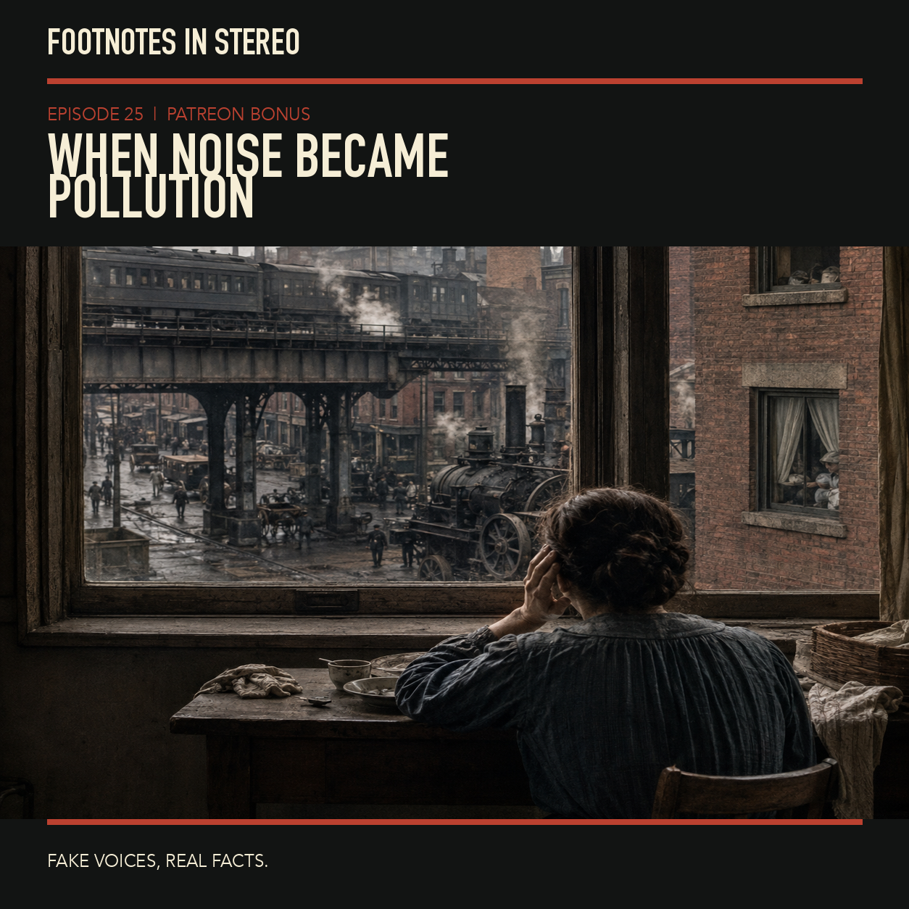

Episode 25 · Patreon bonus
How noise became a deadly social weapon
Mira and Theo explore how unwanted sound became both a political category and a regulated health concern. Britain’s 1935 anti-noise exhibition is examined through historian James Mansell’s interpretation of class and gender, alongside the Noise Control Act, occupational hearing protection, NIOSH’s research and quieter-equipment initiatives, and WHO’s environmental-noise framework. Historical interpretations are attributed; this conversation is not personal medical or legal advice. Created with Gemini Notebook. The conversation and voices in this episode were generated with Gemini Notebook. Fake voices, real facts.
Sources
Transcript
Machine transcript; lightly formatted and subject to correction.
The full episode is available on Patreon. Its audio and transcript are not published in this public archive.